Use the contents list to jump straight to a panel or workflow. Instructions name controls as they appear in the English UI. A screenshot shows the actual application widget; its geometry, material names and numeric values are illustrative demo data.
Workspace and selection
Back to contents ↑The main window is organized around the model: the Project Tree and Body Properties are on the left, the interactive 3D viewport is in the centre, and Objects / Materials is on the right. The menu bar and toolbar provide file, view, geometry, Boolean, transform and simulation commands; the information bar reports drawing and selection prompts.
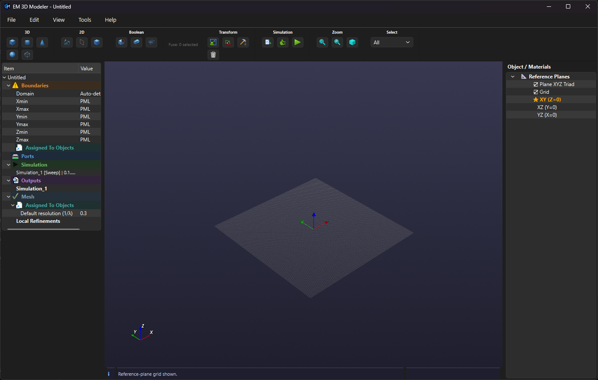
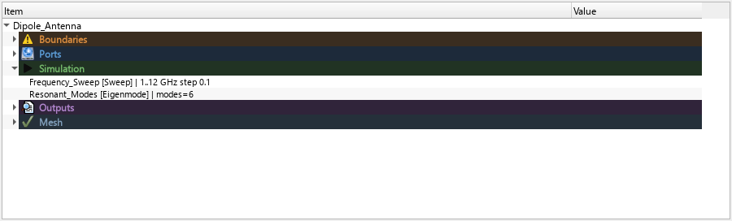
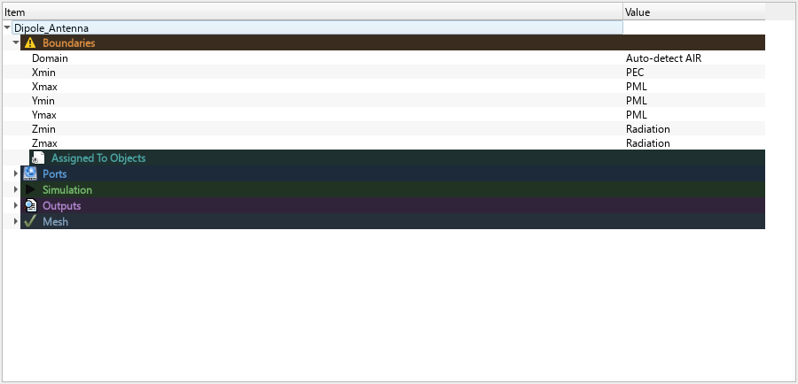
- Click an object in the viewport or tree to select it. The selection is shared between both areas.
- Use Ctrl-click to add or remove an item from a multi-selection; Shift-click selects a tree range.
- Choose All, Surface, Edge or Vertex from the selection-mode control when a command needs sub-object picking.
- Delete removes selected scene objects. Esc cancels an active drawing or picking command.
- Use the camera controls to fit all visible objects, fit the selection, or switch to a standard view. Camera orientation is independent from the active drawing plane.
For project setup see Simulation jobs, Ports and Domain and boundaries.
Toolbar icons
Back to contents ↑The image is a crop of the real application toolbar. Buttons are icon-only; use this guide alongside their group labels. Most creation and edit commands act on the active selection or wait for viewport picks.
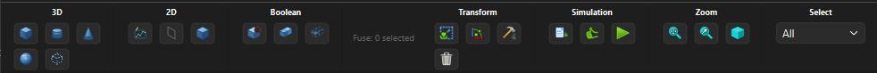
3D
| Icon / control | Action |
|---|---|
| Box: start drawing a box on the active plane. | |
| Cylinder: start drawing a cylinder. | |
| Cone: start drawing a cone. | |
| Sphere: start drawing a sphere. | |
| Open Region / PML: open the wizard for the AIR domain and absorbing boundaries/PML shell. |
2D
| Icon / control | Action |
|---|---|
| Sketch: open the 2D profile editor for extrusion or revolution. | |
| Planar: define a planar structure by picking snapped points on the active plane. | |
| Plate from Face/Edge: create a thin Plate from the last selected face or a supported axis-aligned edge. | |
| Circular Plate: click the center and radius on the active plane; both snap to the configured grid spacing. |
Boolean
| Icon / control | Action |
|---|---|
| Cut: subtract the later-selected tool object(s) from the first selected base. | |
| Fuse: union selected objects. When mesh decimation is enabled in Settings → Utility, choose an optional target triangle reduction from 0% to 80%. The adjacent Fuse: n selected text reports the current selection count; it is a status label, not a command. | |
| Common: keep the intersection shared by the selected objects. |
Transform
| Icon / control | Action |
|---|---|
| Scale: scale selected object(s) by a numeric factor. | |
| Move/Rotate: move and rotate the selection around a reference point. | |
| Pattern: open the Linear/Circular pattern editor for selected source objects. | |
| Dissolve Boolean: restore source objects from selected Boolean result(s) when source data is available. |
Simulation
| Icon / control | Action |
|---|---|
Import STEP: import a .step or .stp CAD file. | |
| Check Simulation: run local preflight checks; this does not launch EMERGE. | |
| Play: prepare the EMERGE scripts and open the simulation window. |
View
| Icon / control | Action |
|---|---|
| Fit All: fit all visible objects without changing view orientation. | |
| Fit Selection: fit selected visible objects without changing view orientation. | |
| Isometric View: set the standard isometric camera and fit all visible objects. | |
| Projection: toggle between perspective and parallel projection. The checked state and icon indicate the active mode; the view framing is preserved when switching. |
Select
| Icon / control | Action |
|---|---|
| Choose All, Surface, Edge or Vertex to select whole bodies or a single face, edge or vertex in the viewport. |
Menu-bar commands, including project save/open, Settings, Material Library and Parameters, are described in Save, import and export, Settings, Objects and materials and Project parameters.
Create geometry
Back to contents ↑Choose a geometry command from the toolbar, then follow the information-bar prompt in the viewport. Most drawing tools use the active reference plane and grid. For accurate work, set the plane, units and grid before drawing.
| Tool family | Typical use | Next step |
|---|---|---|
| Box, Cylinder, Cone, Sphere | Basic solids positioned from viewport picks or editable numeric dimensions. | Inspect or edit dimensions in Body Properties. |
| Plate / planar structure | Thin conductive surfaces, including surfaces used for port assignments. | Assign material and simulation role; see Ports. |
| Sketch | Draw and dimension a 2D profile directly in the viewport, then extrude, revolve or cut. | See Embedded sketch editor. |
| Import STEP | Load CAD solids from .step or .stp files. | Review imported solids in Objects / Materials and assign materials. |
Primitive dimensions are editable after creation. Geometry display units are configured in Settings → Display; exported EMERGE geometry uses metres.
Embedded sketch editor
Back to contents ↑Click Sketch to draw directly in the 3D viewport. A selected planar face in Surface selection mode supplies the sketch plane; otherwise the active reference plane is used. If no plane is active, the Reference Plane dialog opens first. The viewport aligns with the plane and replaces the main toolbar with the icon-only sketch toolbar. Hover over an icon to see its action name and tooltip. In each multi-row group, read icons left to right, then continue on the next row.
3D
| Icon | Function |
|---|---|
| Extrude | Create or update a solid by extending a closed sketch profile along the sketch normal. |
| Revolve | Revolve the profile around a sketch line selected as the axis; follow the viewport prompts. |
| Extruded Cut | Subtract the sketch extrusion from exactly one selected base object. |
2D
| Icon | Function |
|---|---|
| Line | Draw one line segment by picking its two endpoints. |
| Polyline | Pick successive vertices; press Enter or Escape to finish the polyline. |
| Corner Rectangle | Draw a rectangle by picking two opposite corners. |
| Center Rectangle | Draw a rectangle by picking its center and then one corner. |
| Construction | Toggle construction geometry for newly drawn entities. |
| Vertex Snap | Toggle snapping new drawing points to existing sketch vertices. It is enabled by default. |
| Circle | Draw a circle by picking its center and a point on its radius. |
| 3-Point Arc | Draw an arc by picking its start, end and midpoint. |
| Center Arc | Draw an arc by picking its center, start point and end angle. |
Dimensions
| Icon | Function |
|---|---|
| Linear | Dimension two sketch points along the dominant sketch axis. |
| Angular | Measure the angle between two sketch lines. This is an annotation, not a solver constraint. |
| Radius | Set or annotate the radius of a sketch circle or arc. |
| Diameter | Set or annotate the diameter of a sketch circle or arc. |
| Aligned | Dimension the true point-to-point distance, independent of the sketch axes. |
View
| Icon | Function |
|---|---|
| Fit All | Fit all visible objects in the viewport. |
| Fit Selection | Fit the selected object or objects in the viewport. |
| Isometric View | Switch to the standard isometric camera view. |
| Projection | Toggle perspective and parallel projection; the checked state indicates parallel projection. |
Edit
| Icon | Function |
|---|---|
| Select | Switch to selecting or deselecting sketch entities. |
| Delete | Delete the selected sketch entity and its associated dimensions. |
| Exit Sketch | Leave sketch mode without creating or updating a 3D feature. Choose an operation in the 3D group to apply the profile. |
Edit a saved sketch or feature
In Objects / Materials, right-click a sketch-definition child and choose Edit Sketch… to reopen the profile in the viewport; the scene is temporarily hidden while editing. Apply Extrude, Revolve or Extruded Cut to update/create the related feature. For an existing operation, use its child row's Edit Extrude Operation… or Edit Revolve Operation… action. The extrusion editor controls depth, direction and centered mode; the revolve editor controls the profile, sweep angle and axis.
Transforms and patterns
Back to contents ↑Move, rotate and scale
Select one or more objects and use Move / Rotate or Scale. Group transforms use a shared pivot so a selected assembly keeps its relative spacing. The transform editor accepts a reference/pivot, target position and rotation angles; the group transform can also be reopened from the relevant tree item.
Linear and circular patterns
Select one or more source objects and click the Pattern toolbar button. Choose a pattern type in the dialog. The preview responds to the pattern type, instance counts, linear steps and circular angle; it is a placement aid, not a complete preview of picked circular centre, axis and radius. Instance counts are limited to 1–1000.
- Linear: enable any combination of X, Y and Z. For each enabled direction set instances and step; the step is the displacement between consecutive instances on that axis. With multiple enabled axes, the result is a rectangular array across those directions.
- Circular: set the number of instances and Total angle in degrees. Set the circle centre, Distance from axis (radius), and two points defining the rotation axis. Use Pick center, Pick axis point 1 and Pick axis point 2 to pick coordinates from the viewport; the dialog temporarily hides while picking.
Click OK to create the pattern. Source geometry is retained and generated copies are linked to the pattern definition. Each copy appears as a separate object row under its material. An object associated with the definition has a Pattern settings (Linear/Circular) child row; right-click that child and choose Edit Pattern Settings… (or double-click it) to reopen the editor. Editing updates the generated instances from the stored source snapshots. Removing generated copies individually is not a substitute for editing the definition.
Changing a source object's parameters in Body Properties also rebuilds the generated children in every pattern that uses that source. The pattern placement is retained while the copies take on the updated source geometry.
Pattern count, step, angle, coordinate and radius fields accept supported project-variable formulas. The saved definition retains each input expression and its resolved value; changing a project parameter recomputes dependent patterns. For formula syntax and a worked example see Project parameters and formulas.
Boolean operations
Back to contents ↑| Operation | Result |
|---|---|
| Cut | Subtracts each tool from the first selected object (the base). |
| Fuse | Combines selected bodies into one result. |
| Common | Keeps only the shared volume. |
Select the base first, then one or more tools; selection order matters for Cut. Confirm whether tool objects should remain when prompted. In Settings → Utility, enable Ask for mesh decimation on Fuse, Cut and Intersect to request a target triangle reduction from 0% to 80% in 5% steps for each command; when disabled, no prompt appears and reduction is 0%. A non-zero reduction affects only the result mesh, is saved with the Boolean result, and is reapplied on recompute. STEP export uses that stored mesh instead of rebuilding the exact source BREP. Simplification can change dimensions and small features, so check clearances, via connections, and port contact before simulation. Topology-preserving decimation may achieve less than the requested reduction on difficult meshes. The result replaces the base and is stored as a Boolean-derived mesh. Dissolve Boolean can restore its source objects when source data is available.
Objects and materials
Back to contents ↑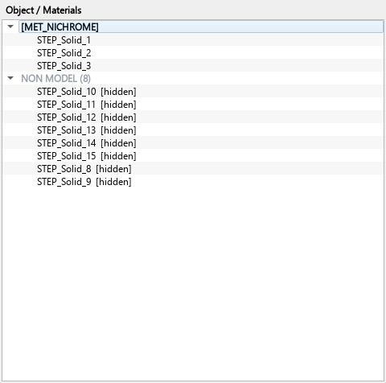
Rafale_Probes.em3d, with the NON MODEL group expanded.Objects with the MODEL role appear beneath their material group. Objects excluded from simulation export are gathered in a separate NON MODEL (n) group; expand it to inspect those items. This lets construction aids, fixtures or visual-only objects remain in the CAD scene without being sent as simulation geometry.
To change an object's role, right-click its row and choose Set as MODEL or Set as NON MODEL. The role is separate from visibility: hiding an object only changes its display, while NON MODEL excludes it from the simulation model. This capture uses the first three MODEL objects and all eight NON MODEL records from the saved Rafale project; the [hidden] markers reflect that project's visibility state.
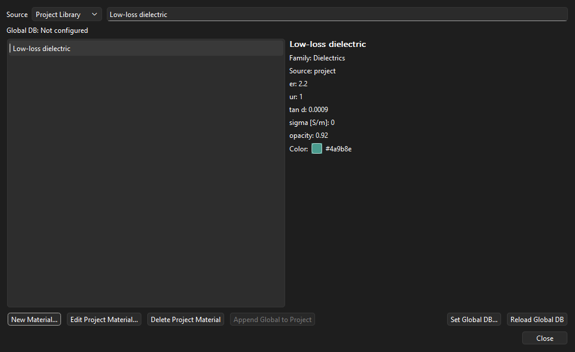
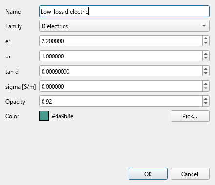
Objects / Materials tree
Objects are grouped by assigned material. Select one or more rows to apply a material or use context-menu actions for object visibility, role, rename, transforms, patterns, port/boundary assignment and mesh controls. Right-click a pattern child to reopen its settings.
Body Properties after selecting an object
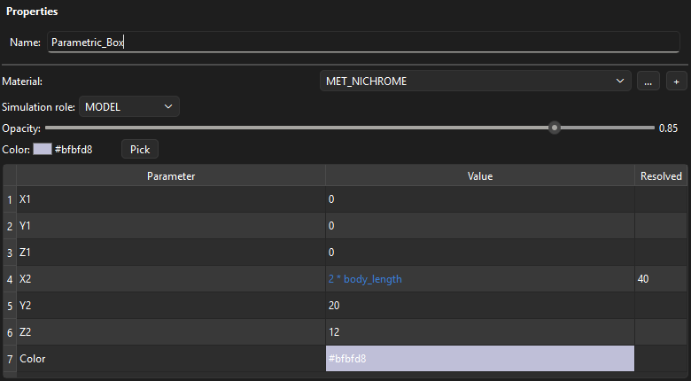
Click an object in the viewport or Objects / Materials tree. The lower-left Properties panel switches to that object's editor. It contains:
- Name: edit the scene object name.
- Material: choose a material;
…opens the material selector and+adds a material name to the project. - Simulation role: MODEL is included in simulation export; NON MODEL remains in the scene but is excluded.
- Opacity and Color: change the rendered appearance. Pick opens the color picker.
- Parameter / Value / Resolved: geometry parameters appear in the table. Edit a Value cell and commit the edit; the object updates immediately. Color is selected with the color picker rather than formula editing.
For a formula-driven row, Value retains the expression and Resolved shows the evaluated numeric value. While typing a project variable in a Value cell, matching variable names are suggested; choose one or press Enter to complete the current name without replacing the rest of the formula. Press Ctrl+Space to show all available variables. Hover over the formula value to see its expression and resolved number. A plain number is also accepted.
With multiple objects selected, the geometry table is hidden. The panel provides shared material, opacity and color controls plus Apply material to all selected; the simulation-role selector is disabled for multi-selection. Enable or disable Apply color in bulk to control whether the bulk action replaces existing colors.
Material Library
Use Tools → Material Library to search and manage project and global records. Material fields include family, relative permittivity (er), relative permeability (ur), loss tangent (tan d), conductivity (sigma [S/m]), color and opacity. Global database location and reload commands are under File.
Reference planes and grid
Back to contents ↑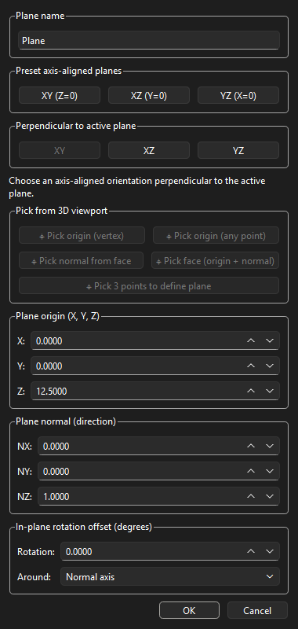
Create a plane
There are two entry points to the same Reference Plane dialog: choose View → Set Reference Plane…, or right-click Objects / Materials → Reference Planes and choose Add Reference Plane…. Right-clicking an existing plane also offers Add Reference Plane…. Enter a name, define its origin and normal, then press OK; the new plane is saved in the Reference Planes tree and becomes active immediately.
- XY (Z=0), XZ (Y=0), YZ (X=0): set the plane normal to the chosen world axis. The origin fields determine its offset; the preset does not force the origin coordinates to zero.
- Pick origin (vertex): snap the origin to an existing vertex.
- Pick origin (any point): pick a point on existing geometry.
- Pick normal from face: use the selected face's outward normal while keeping the origin as entered.
- Pick face (origin + normal): use the picked point and face normal together.
- Pick 3 points to define plane: pick three non-collinear points; the first point becomes the origin and the three points define the normal.
- Plane origin (X, Y, Z): enter the position. Plane normal (NX, NY, NZ): enter the direction; it is normalized when accepted. Rotation / Around: rotate the normal about the selected axis.
Absolute and relative coordinates
The origin fields use model/world coordinates, not coordinates relative to the active plane. The dialog starts with the current plane's origin and normal as initial values, but this is only a starting point: there is no relative-coordinate toggle and no automatic local-origin offset. To place a plane relative to a known reference location, calculate each world coordinate explicitly. For example, define project parameters base_x and offset_x, then enter base_x + offset_x in the new plane's X field; do the same for Y and Z as needed. Keep units consistent; parameter units are labels and do not trigger conversion.
These numeric fields accept supported formulas and project parameter names. The expression is evaluated when the plane is accepted, but the plane stores the resulting numeric origin and normal, not a live formula link. Changing the project parameter later does not move an existing plane; edit or recreate that plane to apply the new value. See Project parameters and formulas for the expression rules.
Activate and view a plane
The dialog is non-modal: while it is hidden during a viewport-pick operation, click the requested point or face and it returns with the selected values. In the Reference Planes tree, use Make Active to switch the drawing grid and creation tools to a saved plane, and View Normal to Plane to align the camera with its positive normal. View → Reset Reference Plane restores the default axis-aligned plane. Grid visibility, spacing, adaptive margin and plane-triad size are controlled through the viewport and Settings.
Settings
Back to contents ↑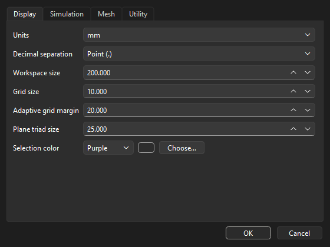
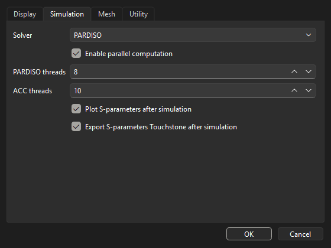
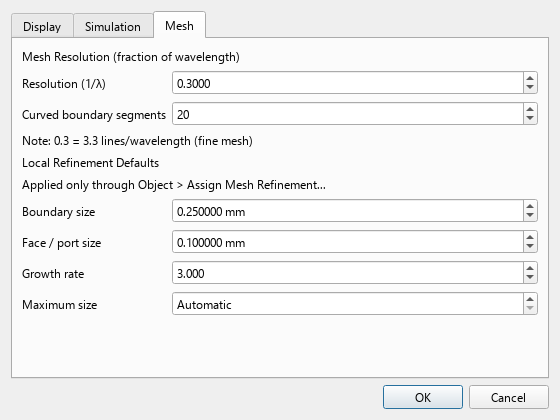
Display
Configure length units, decimal separator, workspace size, grid size, adaptive grid margin, plane-triad size and selection color. These settings affect drawing/display behavior, not the physical dimensions of saved geometry.
Simulation
Choose a solver name, enable/disable parallel computation and set PARDISO and ACC thread counts. Optional post-run switches control automatic S-parameter plotting and Touchstone export where supported. A solver appearing in this list does not prove that its backend is installed; verify the EMERGE environment.
Mesh
Set the global wavelength-fraction resolution and curved-boundary segmentation. Object-specific resolution and local refinement assignments are described in Mesh and local refinement.
Utility
Workspace folder sets the initial directory used by Open Project and Save Project As; it is saved as an application preference. Export complete scene STEP writes a separate STEP containing the complete scene when simulation assets are next prepared; it does not re-export the ordinary object bundle if unchanged. Ask for mesh decimation on Fuse, Cut and Intersect enables the per-operation triangle-reduction prompt. Utility preferences are saved for future sessions.
Project parameters and formulas
Back to contents ↑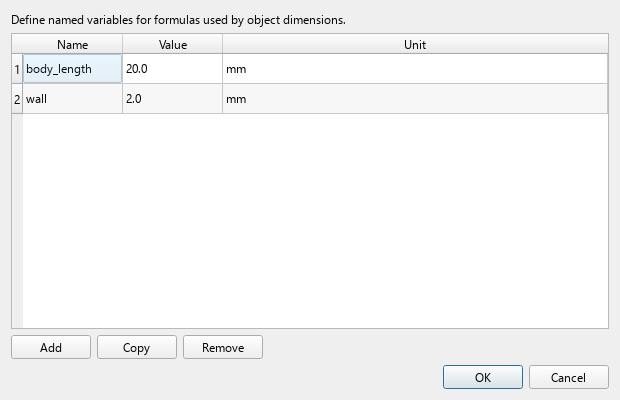
Open Tools → Parameters to manage named project variables. Add creates a row; enter a unique identifier in Name, a numeric value in Value and an optional documentation unit in Unit. Use Copy or Remove as needed, then accept the dialog. Units label the value; they are not dimensional analysis or automatic unit conversion.
Enter formulas only into formula-enabled fields, for example a Body Properties dimension or a pattern input. In the example screenshot, body_length = 20 mm and the box's X2 value is 2 * body_length, so Resolved is 40. The application's geometry display unit determines how dimensions are interpreted; keep variables used together in consistent units.
Supported expression syntax
Formulas support numeric literals, project parameter names, parentheses, unary +/-, and the arithmetic operators +, -, *, /, % and ** (power). Constants: pi, e, inf. Approved functions: abs, acos, asin, atan, ceil, clip, cos, degrees, exp, floor, hypot, log, log10, max, min, radians, sign, sin, sqrt and tan. Trigonometric functions use radians; wrap an angle with radians(angle_deg) when it is stored in degrees.
Useful examples: 2 * wall, body_length + 4 * wall, sqrt(width**2 + height**2) and 360 / (count - 1). Integer/count fields require formulas to evaluate to a whole number; counts also have field-specific minimum and maximum limits. Unknown names, unsupported syntax, division by zero, non-finite results and values outside the field's range are rejected.
The expression is retained separately from its current resolved number. When a project parameter changes, dependent parametric geometry and patterns are recalculated. Formula-driven simulation job values are stored as resolved numbers alongside their expressions; after changing project parameters, reopen the affected Simulation job and accept it to refresh those values before preflight/export. Saving the project persists the parameter table and dependent expressions. A formula is not a Python script: attributes, indexing, imports, comprehensions and arbitrary function calls are not allowed. Expressions are accepted only in fields explicitly supporting formulas; a unit label alone does not imply formula support.
Simulation jobs
Back to contents ↑Right-click Simulation to add a job. Double-click a job to edit it; its context menu can enable/disable or remove it. Each job has a name, type and enabled state.
- Sweep: set minimum and maximum frequency in GHz and either frequency step or number of points. The editor keeps step and point count consistent.
- Eigenmode: set the number of modes to calculate.
- Parametric: select a parameter name and provide the values to evaluate; frequency sweep controls are available for the nested run.
- Log Verbosity: sets the runtime logging level; it is not a filter for hiding lines already shown in the log window.
Sweep and Parametric job editors also provide Enable S-parameter line fitting and Fitting points. Fitting evaluates a dense frequency curve from the solver's sampled data; it is separate from the raw solver samples. These options affect post-run plotting and Touchstone export, not the frequency sampling requested from the solver.
Enabled jobs are exported and executed by the master script. Sweep and Parametric jobs require port setup for driven analysis; Eigenmode is the natural choice when no driven port is required. See Ports, Outputs and Run the simulation.
Ports
Back to contents ↑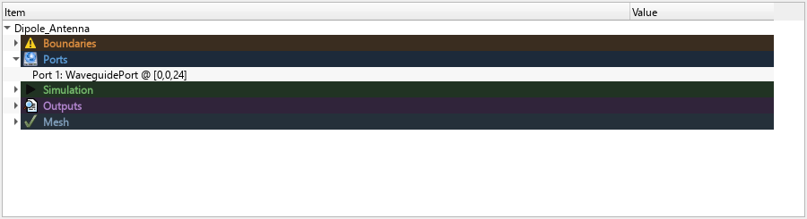
Right-click Ports to add an assignment, then select the target Plate/Plate-role object. Edit the port to configure its type-specific values. Displayed port numbers are metadata; the exporter emits consecutive solver IDs.
| Port type | Configuration and current constraints |
|---|---|
| WaveguidePort | Configure mode (for example TE10), excitation and the assigned Plate. The waveguide opening must lie on the end face of a correctly defined AIR region. |
| LumpedPort | Configure resistance, voltage and a non-zero direction vector. The assigned Plate must make physical contact with at least two distinct conductive objects representing signal and reference. |
| PlaneWave | The editor exposes incidence angles and polarization, but the current validator/export path rejects PlaneWave port export. Do not rely on this type for a simulation. |
Simulation domain and boundaries
Back to contents ↑The Project Tree lists the simulation Domain and global faces Xmin, Xmax, Ymin, Ymax, Zmin and Zmax. Double-click a value or use the context menu to edit the available assignment. Object-level boundary assignments are managed from Objects / Materials.
Open-region / PML wizard
Use the toolbar's Open Region / PML wizard to create an AIR region around selected model geometry and configure global absorbing boundaries. The PML option also defines an explicit PML shell. Generated exports use native EMERGE PML geometry when the setup is valid.
Closed internal waveguides
For a closed waveguide model, use PEC walls and WaveguidePort openings at the physical ends. Ensure the AIR region represents the intended interior volume and that port Plates align with the end faces. The current UI does not provide a generic None global-boundary choice, so do not follow older instructions that say to remove boundaries or set the domain to None.
If preflight reports that a waveguide object lies outside the configured AIR region, check whether global faces are set to Open, Radiation or PML: those open-region settings validate model containment against the AIR domain. For a closed guide, use an internal AIR fill with PEC walls and ports at its openings; do not configure an unrelated external open-region AIR volume unless the model is intended to use that open-boundary setup.
Global Periodic boundaries are visible in the UI but are not implemented by the current exporter and are rejected by preflight. Object-level PML/Periodic options also have export limitations. See Check Simulation before generating a run.
Mesh and local refinement
Back to contents ↑Settings → Mesh controls the global resolution, expressed as a fraction of wavelength, and curved-boundary segmentation. A smaller fraction generally yields a finer mesh and larger models/runtimes. Per-object resolution assignments are managed under Project Tree → Mesh.
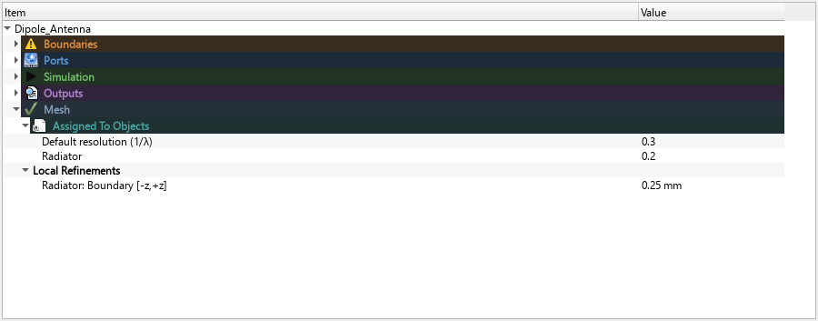
Use Objects / Materials → right-click → Assign Mesh Refinement for local controls. Assignments are listed under Project Tree → Mesh → Local Refinements; double-click to edit or right-click to enable, disable or remove.
- Boundary edges: refines perimeter curves of selected faces; provide face selectors such as
-z,+z, minimum size in mm, growth rate and optional maximum size. - Face: refines selected faces. For a Plate, leaving Faces empty applies the refinement to the complete Plate.
- Enabled: temporarily includes or suppresses the assignment in script generation without deleting it.
Outputs and plots
Back to contents ↑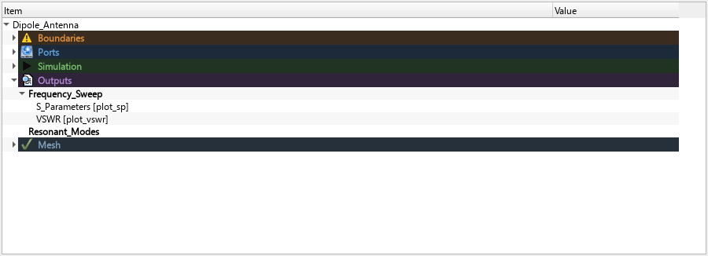
Right-click Outputs to add an output, select its source simulation and plot type, and enable it. Double-click to edit; use Generate Plot on a saved result to create the requested plot.
| Type | Purpose |
|---|---|
plot_sp | S-parameter magnitude/phase plots. |
plot_vswr | Voltage standing-wave ratio. |
smith | Smith chart output. |
plot | General result plot supported by the installed EMERGE version. |
plot_ff, plot_ff_polar, plot_ff_3d | Far-field result types; require saved E/H fields and a valid frequency/plane selection when generating from saved results. |
For an S-parameter matrix, rows represent output ports and columns input ports: row 2, column 1 is S21. The optional automatic post-run S-parameter plot is separate from Project Tree output definitions. Far-field entries request field saving; they are not plotted by the ordinary automatic S-parameter plotting step. The Polar 2D/3D display selector is currently not consumed by the plotting handler.
When Export S-parameters Touchstone after simulation is enabled in Settings → Simulation, Sweep and Parametric results are written beside the generated job scripts in _EmergeSim. With fitting disabled, one *_fit.sNp file contains the original solver samples. With fitting enabled and successful, *_original.sNp contains the raw samples and *_fit.sNp contains the fitted curve; n is the number of ports. If fitting fails, the original file is still saved, no fitted file is written, and the log reports the fitting warning. A fitting failure does not by itself mean the EMERGE solve failed. If automatic plotting is enabled, it falls back to the raw samples when fitting fails.
Check Simulation
Back to contents ↑Run Check Simulation from the Simulation toolbar or the EMERGE Simulation window before export or run. The local preflight reports errors, warnings and passed checks. It does not start EMERGE or solve the model.
Preflight examines model geometry/material assignments, enabled job configuration, solver name, mesh inputs, AIR-domain containment, global boundaries and port geometry/connectivity. Resolve blocking errors, then check again.
Frequent blocking issues include an unconfigured PML shell, Periodic global faces, PlaneWave ports, a zero LumpedPort direction, invalid Plate/contact geometry or an object outside the configured AIR region. For a closed waveguide, an AIR containment error can indicate that open-region global boundaries are enabled for a model intended to use internal AIR and PEC walls. See the related sections: Ports and Domain and boundaries.
EMERGE Simulation window
Back to contents ↑Click Play to prepare the EMERGE workflow and open the simulation window. Preparation reuses the STEP bundle when it is current, updates enabled child scripts, optionally exports the complete scene STEP when enabled in Settings → Utility, saves the master and child scripts in the project _EmergeSim directory, and clears the visible run log.
| Control | What it does |
|---|---|
| Check Simulation | Runs local validation only; it does not start a simulation. |
| Preview Export | Previews meshing/export without committing a normal run. |
| Show Model / Show Mesh | Opens geometry or generated-mesh inspection where available. |
| Generate Script / Save Script | Refreshes or saves the displayed scripts. |
| Run / Stop | Starts the master workflow or requests that the active run stop. |
| Master / child tabs | Switch between the orchestrating script and per-job scripts. |
| Log Verbosity / Clear Log | Sets emitted runtime verbosity or clears the visible log. Verbosity is not a display filter. |
Use Boolean Debug when inspecting supported Boolean export geometry. After a Sweep or Parametric run, inspect the log and the _EmergeSim folder for raw/fitted Touchstone output as described in Outputs and plots. Simulation results and plot generation are separate from model/script preview.
Save, import and export
Back to contents ↑- New / Open / Save / Save As: manage native
.em3dprojects. The project stores model geometry, materials, settings, jobs and assignments. - Import STEP: load one or more solids from
.stepor.stpfiles; inspect the resulting objects and assign materials. - Export EMERGE Script: generate a script and STEP bundle without starting a simulation.
- Play: prepare scripts and open the simulation workflow; see EMERGE Simulation window.
- Recent Projects: reopen a recently used project from the File menu.
Save the project before major operations. Use Undo/Redo for recent scene changes; geometry operations and simulation assignments may have distinct persistence behavior.
Shortcuts and troubleshooting
Back to contents ↑| Shortcut | Action |
|---|---|
| Ctrl+N | New project |
| Ctrl+O | Open project |
| Ctrl+S | Save project |
| Ctrl+Z / Ctrl+Y | Undo / Redo |
| Delete | Delete selected objects |
| Esc | Cancel drawing or picking |
| Home | Reset camera |
| Ctrl+1…Ctrl+4, Ctrl+6 | Standard camera views; Ctrl+6 shows Back, opposite Front (Ctrl+2) |
| Ctrl-click | Multi-select in the Objects / Materials tree |
Common issues
- Boolean result is empty or wrong: verify selection order, solid overlap and valid closed geometry. Try a smaller operation.
- Preflight reports PML: configure an explicit PML shell, or choose supported PEC/PMC/Open/Radiation faces consistent with the domain.
- Port validation fails: confirm the assigned object is a suitable Plate; for a LumpedPort check two conductor contacts and a non-zero direction; for a WaveguidePort confirm the AIR end face.
- Plot is empty: confirm the job completed, the needed results/fields were saved and the chosen frequency is available.
- Solver cannot start: confirm the selected backend is installed and usable in the active EMERGE Python environment.
Units at a glance
Geometry inputs use the selected display length unit; exported geometry uses metres. Frequency inputs use GHz. Resistance uses ohms, conductivity uses S/m, angles use degrees, and local mesh sizes are entered in mm.
This guide describes EM 3D Modeler 1.3.4b1. Optional solver behavior depends on the installed EMERGE environment. Genuine dialog and Project Tree screenshots are generated by scripts/capture_help_screenshots.py. Capture the embedded sketch toolbar with python scripts/capture_help_screenshots.py --sketch-toolbar-only. See the capture instructions.